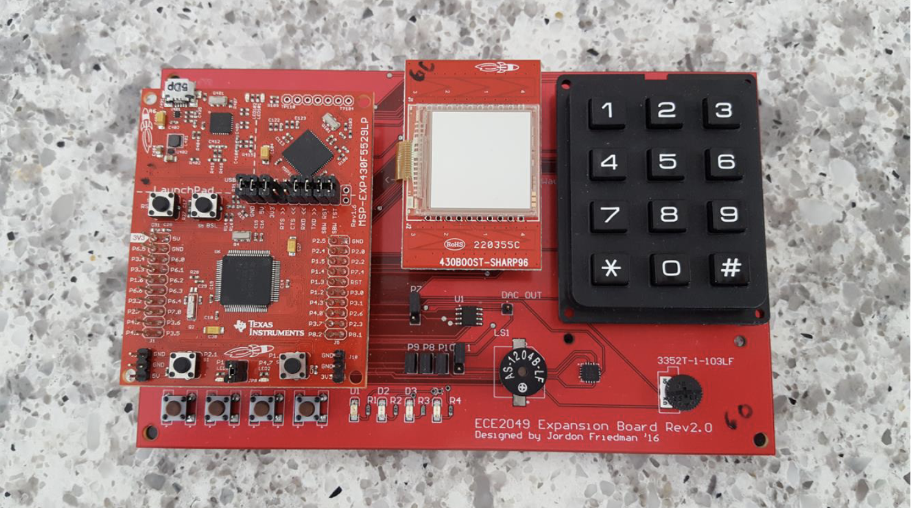
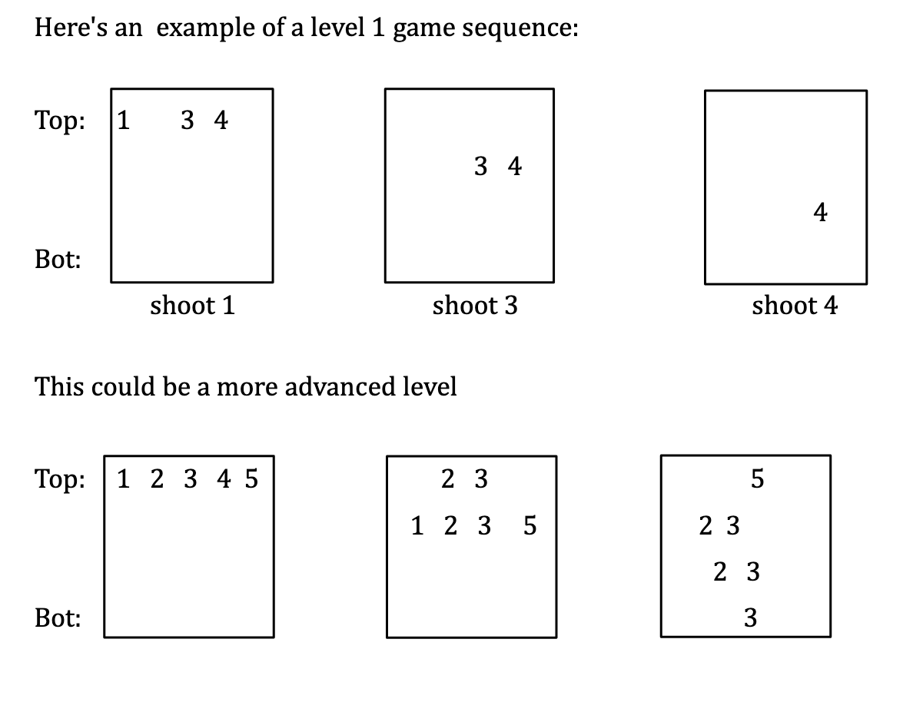

Embedded Systems Programming
Description
Embedded Systems Board with MSP430F5529 Microcontroller.
Execution
Using the MSP430 Microcontroller, I implemented several programs.
Space Invaders
Created in the late 1970's, one of the earliest and most popular video arcade games was Space Invaders. The objective of Space Invaders was simple, shoot the descending aliens before they land (or they shoot you). The original game displayed rows of aliens who “fell” down the screen unless the player shot them. As soon as the player cleared all the threatening aliens, more would appear, and these ones would be descended even more quickly! In this implementation of a Space Invaders-like game, I use numbers to represent aliens where 1 to 5 “alien” icons appear across the top of the screen. The player “shoots” the alien by pressing the correspondingly numbered key on the keypad. If the player does not shoot the alien promptly the alien moves down the screen. After a player defeats the invasion (wins the level), more aliens appear at the top and fall more quickly. The game is lost when an alien lands on the bottom of the screen. The game should flash the LEDs, sound the buzzer and write a message to the screen when the player loses.
Guitar Hero
The Guitar Hero series of music video games are very popular and a lot of fun. They are also, like many popular games, “conceptually simple”. The game plays a familiar rock song while flashing lights indicating the notes that the player should press on their peripheral I/O device (i.e., plastic guitar!). In this project I used the MSP430 to implement a simple version of this game, MSP430 Hero. My game played a tune using a buzzer and flashed the 4 multi-colored LEDs with the notes. The player will play by entering the notes flashed using the buttons. If the player can't keep up, then they lose the game. This project was very fun and challenging. It included gaining further experience with digital I/O, understanding the operation of the MSP430's timers and gaining experience writing software which depends critically on the passage of time. Checkout this video of one of my friends testing out the system. Check out this other video to see detection of failure.
Time and Temperature Display
In this project I used the MSP430 and several of its peripherals to implement a system that measures temperature using ADC12's internal temperature sensor once per second (measured with Timer A2) and displays time along with the temperature to the LCD. The main purpose of the project is to gain some experience using MSP430's analog-to-digital converter. Digital time and temperature displays are common sight. First I implemented a UTC style clock with one second resolution. The temperature sensor which used is the MSP430's internal temperature sensor which is connected to ADC12_A analog input channel 10 (ADC12INCH_10). I also implemented the Scroll Wheel and use it to modify the date and time settings.
Simple function generator
In this project I gained further experience with SPI by using the MSP430 and the MCP4921 DAC to create a simple function generator. Specifically, my function generator was capable of generating different DC values as well as a square wave, a sawtooth wave, and a triangle wave.
What did I learn?
Overall, in completing these projects I gained hands-on experience in programming microcontrollers, working with various peripherals, implementing game logic, managing real-time aspects, and interfacing with external devices. Additionally, I developed skills in analog-to-digital conversion, SPI communication, and overall embedded system design. I enjoyed all of these projects and learned more about reading datasheets, making sense of everything I was reading, and implementing it in C. To checkout my code, go to my GitHub.